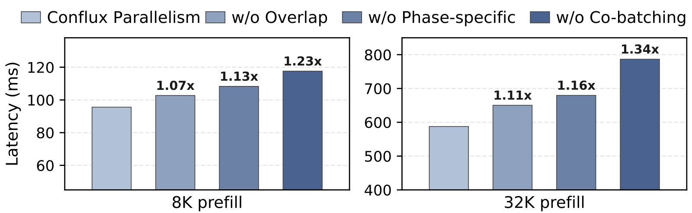
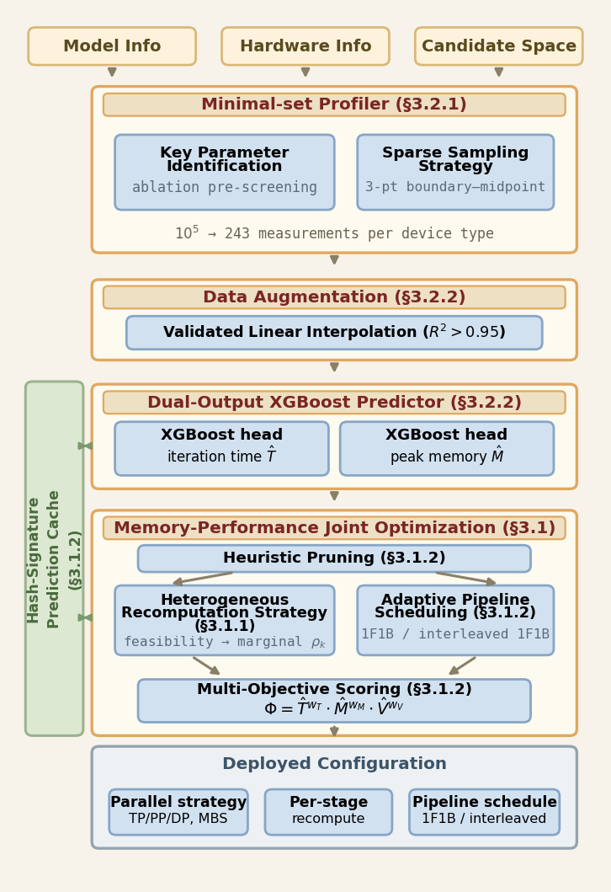

目录 · 8 节
1它到底在解决什么问题？2先看全景：一层 Transformer 里发生了什么3为什么线性层能拼、注意力不能拼？4调度：每一轮该塞多少 prefill、放在哪张卡5实验结果说明了什么？6我认为它的局限7一个推理团队可以怎么试8结论做大模型推理服务、尤其是要同时扛长 prompt 和大量在跑会话的团队值得读，因为它把“prefill 和 decode 合着跑还是分开跑”这个老问题拆到了算子一层，两边的好处都拿到了。大模型服务里，prefill 和 decode 放在一起跑能互补资源，前者吃算力，后者吃显存带宽，但两者想要的并行方式不一样。长 prompt 的 prefill 要铺到更多卡上才能按时出首 token，decode 几张卡就够。ConfluxServe 按算子分开处理。线性层里，两阶段的 token 拼成一个批，用同一份权重切分一起算。到注意力层再分开，decode 留在本组卡上算，prefill 通过两次 All-to-All 分到更多卡上并行算，两条路径同时跑，算完再拼回一个批。在线上负载上，它在延迟约束内能承受的请求量比最强基线高 1.26 到 1.62 倍。合批还是分开，可以按算子来定，不必整个模型一刀切。
它到底在解决什么问题？
先看一个具体场景（示意）：一台机器上 4 张 H100 跑 Qwen3-14B，每张卡上已经挂着一批在 decode 的会话，这时来了一个 32K token 的 prompt。服务要同时守两条线：TTFT 不超过 2 秒，TBT 不超过 100 ms。
论文先用实测说明两边的需求为什么拧着。资源上，两者互补：16 个上下文 8K 的 decode 请求，一轮只要约 20 ms，GPU 算力利用率只有约 16%。在 50 ms 和 100 ms 的 TBT 约束下，还能顺带塞进约 1K 和 2.2K 个 prefill token，利用率升到 75% 和 90%。chunked prefill 利用的正是这一点。
并行方式上，两者却想要相反的东西。32K 的 prompt 至少要 2 张卡、64K 至少要 4 张卡才能在 2 秒内出首 token，所以 prefill 必须铺开。铺开的方式也有讲究：SP 在 8 卡时还保有 93% 的并行效率，TP 只剩 66%。decode 正好相反，每轮每个请求只算一个 token，单卡一轮就在 25 ms 内，再铺到 8 卡，效率掉到 TP 的 39% 和 SP 的 16%，因为活太少，摊不平通信。
于是现有系统只能二选一：
| 做法（示意场景下） | 代表系统 | 资源互补 | 各用各的并行 |
|---|---|---|---|
| 合在一批，统一 TP4 | Chunked Prefill | 有 | 没有，decode 也被铺到 4 卡上 |
| 两个 kernel 同时跑，按 SM 分给两边，统一 TP4 | MuxWise | 有 | 没有 |
| 分时轮流，prefill SP4、decode 单卡 | LoongServe | 没有，decode 那几轮算力闲着 | 有 |
| 分机器部署 | DistServe | 没有 | 有 |
论文在 4 张 H100 上实测了这个两难：维持 96 个在跑的 decode，看各家在不违反 TBT 的前提下每秒能完成多少个 prefill。50 ms 约束下，LoongServe、Chunked Prefill、MuxWise 分别是 2.41、4.17、4.38 个，ConfluxServe 的并行方案是 6.15 个。这说明两种好处确实能叠加，而不只是在两者之间找平衡点。
先看全景：一层 Transformer 里发生了什么

先说权重怎么放。SP 只切序列、不切权重，所以图 7 里每张卡都存一份完整权重。模型大到一张卡放不下时，就把固定的几张卡编成一个 TP 组，当作一个逻辑上的“卡”：组内照常按 TP 切权重，prefill 在这些组之间做 SP，每个 decode 请求只住在一个组里。实验中 8B 和 14B 模型每组一张卡，32B 模型每组两张卡。下面用图 7 里两张卡的例子走一遍。prefill 请求 A 这一块有 a3、a4 两个 token，按序列切到两张卡上，一卡一个；decode 请求 B 和 C 各有一个新 token b4、c2，分别住在 0 号卡和 1 号卡。一层 Transformer 分三段：
- QKV 投影：0 号卡把 [a3, b4] 拼成一个两行的矩阵，一次矩阵乘算完；1 号卡算 [a4, c2]。
- 注意力：路径分叉。b4、c2 各自在本卡读自己的 KV cache 算注意力。a3、a4 经第一次 All-to-All，从“每卡一段序列、所有注意力头”换成“每卡整段序列、一半注意力头”，各卡算完自己那一半头，再经第二次 All-to-All 换回按序列切的样子。两条路径放在不同的 CUDA stream 上同时跑。
- 输出投影和 FFN：两条路径重新汇合，每张卡又拼成 [a3, b4] 和 [a4, c2] 一起算。
KV cache 的位置也随之固定：decode 的 KV 一直留在它所在的卡上，prefill 的 KV 按注意力头分散存放，后续切块直接接着用，不用重新搬。唯一的一次搬运发生在 prefill 结束、转入 decode 时，各卡上的 KV 分片一次性传到选定的那张卡，走节点内的高速互联，并和最后一块 prefill 同时进行。 Hoot 说

- 0 号卡：整段序列 × 2 个头，能独立算注意力
- 在 0 号卡
- 在 1 号卡
- 为什么能换：注意力头是并排的几组独立注意力，各算各的。每层 4 个头（示意）、2 张卡，交换后每张卡拿 4/2 = 2 个头，但看得到 a3、a4 整段；算完再换回按序列切，交给线性层和 decode token 拼着算。
这篇论文的贡献是让 prefill 用序列并行、decode 各住一张卡，两者在同一层里一起算。以论文图 7 的两张卡为例：prefill 请求 A 的 a3、a4 按序列切到两张卡，注意力前做一次 All-to-All。
出处
示意例子，对应论文图 7 的两卡流程为什么线性层能拼、注意力不能拼？
这是整篇的关键观察。线性层对每个 token 用同一份权重。SP 只改变“哪段序列在哪张卡上”，不改变权重和特征维度，所以不管 prefill 铺在几张卡上，每张卡上的 prefill token 和 decode token 都能拼进同一个矩阵乘。拼起来的好处是权重只读一遍：decode 本来是“为了几个 token 把整份权重从显存读一遍”，现在这一遍读顺带服务了几百个 prefill token，算力和带宽同时用上。
注意力层的情况正好相反。只有 QKV 的切分方式一致时，两批注意力才能塞进一次调用，而 prefill 按头切、decode 不切，没法合并。而且合并本来就没多少好处：每个请求只读自己的 KV，多拼几个请求，计算量和读 KV 的量同比例增加，算术强度并不会上去。所以论文的做法是：拼批收益大的地方拼，收益小又拼不了的地方放开，各走各的并行方式。
注意力分叉那一段还能顺手重叠。prefill 路径吃算力和通信，decode 注意力吃显存带宽，正好错开。为了不让两者抢 SM 抢得太凶，系统用 NVIDIA 的 GreenContext 在这个算子内部划分 SM：给 decode 分刚好够它跑出单独运行时 90% 峰值带宽的 SM 数，剩下的全给 prefill。线性层依旧放在 CUDA graph 里，只有注意力这一小段用普通方式执行。
调度：每一轮该塞多少 prefill、放在哪张卡
有了执行方式，还要决定每一轮塞多少 prefill 才不超 TBT。ConfluxServe 先建了一个延迟模型。每层的耗时等于两段之和：线性层那段由“本地 token 最多的那张卡”决定；注意力那段取 prefill 路径和 decode 路径里慢的那个，各乘一个反映相互干扰的放大系数。decode 路径由“decode 上下文总长最大的那张卡”决定。prefill 路径分两部分，通信看最大的 prefill 分片，注意力计算则被 All-to-All 平均分到所有卡上。这些函数都通过离线 profiling 拟合，在三个模型上的平均误差是 4.1% 到 4.8%。
由此得到派发 prefill 的原则：让每张卡上 prefill 加 decode 的 token 总数尽量一样多。论文叫它 waterfill，像往高低不平的几个杯子里倒水，先填低的。举个能心算的例子（示意）：4 张卡上的 decode token 分别是 40、10、10、0。用延迟模型二分搜索，发现 TBT 允许每张卡最多处理 300 个 token，那么各卡还能接 260、290、290、300 个 prefill token，这一轮的 prefill 预算就是 1140 个。来了一个剩余 2000 token 的 prompt，这一轮就切 1140 个，按这个比例分到各卡。
prefill 结束后，请求要选一张卡住下来做 decode。KV 空间充裕时，放到 decode 上下文总长最小的那张卡，让下一轮各卡负载更平；所有卡的 KV 使用率都超过一个阈值后，改成往最满的卡上塞，避免剩余空间碎成每张卡一小块，谁都放不下下一个长会话。
最外层是排队顺序：先挑出在当前预算下能赶上 TTFT 截止时间的请求，按截止时间早晚排，剩下的按剩余长度从短到长补位。调度一次的开销在 1.05 ms 以内，并且和 GPU 执行异步进行。
实验结果说明了什么？
实验在 H100（NVLink 互联）上跑三个模型：Llama-3.1-8B 和 Qwen3-14B 用 4 卡，Qwen3-32B 用 8 卡。主负载是 Mooncake-Toolagent，来自 Mooncake 线上记录，prompt 中位数 6,346、P95 26,114，输出很短。指标是 goodput：至少 95% 的请求每个 token 都按时到达时，系统能承受的最大请求速率。
| 设置 | Llama-8B | Qwen-14B | Qwen-32B |
|---|---|---|---|
| 都用先来先服务：ConfluxServe（请求/秒） | 7.9 | 6.0 | 4.1 |
| 相对最强基线 | 1.33 倍 | 1.34 倍 | 1.62 倍 |
| 各自加强调度：ConfluxServe（请求/秒） | 9.2 | 7.9 | 5.6 |
| 相对最强基线 | 1.26 倍 | 1.52 倍 | 1.44 倍 |
第一组把所有系统都换成先来先服务，看的是执行方式本身的差别；第二组给每个基线都加上“剩余 prefill 最短的先跑”的调度。两组都领先，说明收益主要来自执行方式，调度器在此之上又带来 1.16 到 1.37 倍。

消融把三件事逐个关掉。每张卡挂 24 个 8K 上下文的 decode，再插入一个 prefill。对 32K 的 prefill，关掉注意力重叠慢到 1.11 倍，再让 decode 也跟着铺开慢到 1.16 倍，再不拼批慢到 1.34 倍。这说明三块都有贡献，拼批这一步最大，prompt 越长差距越大，因为每多一块都要多付一次这些代价。
其余几个实验各回答一个问题。注意力重叠在每卡 32 个 decode 时把这段从 36.5 ms 降到 28.0 ms，20 次运行的波动在 3.5% 以内，说明干扰是稳定可预测的，延迟模型才靠得住。SP 从 1 卡扩到 2、4、8 卡，32K prefill 分别快 1.93、4.17、7.94 倍，接近线性，说明多出的通信大多被 decode 注意力盖住了。一张卡挂 128 个 decode、另外三张空着时，平均派发让线性层慢 1.32 倍，waterfill 把它拉平。
我认为它的局限
第一，只在单机上验证。论文受限于测试环境，每次只跑一个 4 卡或 8 卡的实例，没有测多实例之间的请求路由，也没有跨节点。SP 依赖节点内高速互联做 All-to-All，跨机后 All-to-All 会变慢，这套重叠还能盖住多少通信，要靠自己测。
第二，prompt 短时收益明显缩小。在 prompt 中位数只有 1,046 的 QwenA 负载上，它只比最强基线高 1.1 倍；在 prompt 更长的 Mooncake-Synthetic 上是 1.7 倍。如果你的流量以短对话为主，值得的空间不大。
第三，实验只有三个 dense 模型，最大 32B。延迟模型和 SM 划分都靠对具体模型、具体硬件的离线 profiling 标定，换成 MoE 或别的卡都要重新标一遍。
一个推理团队可以怎么试
- 先量自己的流量：统计 prompt 长度的 P50 和 P95，以及 decode 单卡一轮的耗时。如果 P95 prompt 需要多卡才能满足 TTFT，而 decode 单卡就有很大 TBT 余量，这篇的前提就成立。
- 先搭执行方式本身：把卡编成固定的组（单卡或固定的 TP 组），prefill 在组之间走 Ulysses SP、KV 按注意力头分开存，decode 请求各住一个组、KV 留在组内，线性层把两边的 token 拼批。在固定 decode 负载下测一个长 prefill 的完成时间，和同样卡数下统一 TP 再拼批的现有做法比。
- 再加 waterfill 派发和延迟模型。判断标准是预测误差能否压到 5% 左右；误差大时，TBT 预算会算错，调度要么保守浪费，要么超时。
- 最后在真实流量回放上比 goodput，按“95% 请求每个 token 都准时”这个口径算，别只看平均吞吐。
结论
最值得带走的一点：prefill 和 decode 的矛盾不在整个模型上，而在注意力这一个算子上，只在这里分开，其余地方照常拼批。
| 维度 | 评价 |
|---|---|
| 问题重要性 | 高。长 prompt 加长会话是 agent 流量的常态，现有系统要么浪费算力，要么拖慢 decode |
| 方法创新性 | 中高。拼批、SP、SM 划分都是现成部件，新意在按算子组合它们 |
| 实验证据 | 中高。三个模型、三种负载、逐项消融都有，但只测了单机单实例 |
| 工程成本 | 中高。要改注意力算子、CUDA graph 切分，还要为每个模型和硬件做 profiling |
| 是否值得尝试 | 值得，前提是 P95 prompt 长到需要多卡 prefill；短 prompt 流量收益有限 |
读完这篇，你觉得
夜读鸮记下了，谢谢你的反馈。
点一下即可，无需登录；再点一次撤回。只统计匿名次数，不记录你是谁。
相关论文RELATED
 Infra · 2026-11-04Fairway: Load-Aware KV Cache Reuse for LLM Prefill Scheduling前缀缓存下的 prefill 排队，可以同时做到中位延迟低、长尾也短：队列短时优先跑命中多的便宜请求，一个请求等得越久（和它自己的 prefill 时长相比）就排得越靠前，同时限制便宜请求最多能插到最老请求前面多少计算量。这就是 Fairway 的做法。agent 和 RAG 的请求常共用一段前缀，同一队列里各请求剩下的计算量能差上百倍，先跑谁就决定了每个请求等多久才出第一个 token。在流量尖峰里，Fairway 的中位首 token 延迟是 0.82 秒，p99 接近先来先服务；偏向命中的排法 p99 则到了 11 到 50 秒。
Infra · 2026-11-04Fairway: Load-Aware KV Cache Reuse for LLM Prefill Scheduling前缀缓存下的 prefill 排队，可以同时做到中位延迟低、长尾也短：队列短时优先跑命中多的便宜请求，一个请求等得越久（和它自己的 prefill 时长相比）就排得越靠前，同时限制便宜请求最多能插到最老请求前面多少计算量。这就是 Fairway 的做法。agent 和 RAG 的请求常共用一段前缀，同一队列里各请求剩下的计算量能差上百倍，先跑谁就决定了每个请求等多久才出第一个 token。在流量尖峰里，Fairway 的中位首 token 延迟是 0.82 秒，p99 接近先来先服务；偏向命中的排法 p99 则到了 11 到 50 秒。
Infra · 2026-11-03MemX: Memory-Aware Automatic Parallelism for Cross-Vendor Heterogeneous GPU Training在多家厂商 GPU 混在一起的集群上训练大模型，MemX 把各卡显存均不均衡也写进搜索目标，并且允许显存小的卡多做重算、显存大的卡不做，从而找到既不 OOM、各卡显存又均匀的并行配置。它给每个候选配置估迭代耗时、峰值显存和各卡显存方差，按权重合成一个分数，分数最小的胜出。在三厂商集群上，按耗时和按显存均衡两种排序，只有它都把真实第一名排在第一；在线搜索 31,240 个配置只要 26.5 秒。它换来的是显存余量，不是更快：实际部署时它挑的配置比最快配置慢 9.3%。混合集群里显存和算力不成比例，搜索目标里必须有显存。 Infra · 2026-11-03Matching Workloads to Blackwell: Power-Resolved Benchmarking of NVIDIA B200 and B300 across HPC and AI WorkloadsB300 是 B200 的升级款，显存更大，但它不是在所有任务上都更快。芝加哥大学研究计算中心在两个八卡集群上实测，卷积网络推理时 B300 最多慢 5.6 倍。看每张卡的功耗能找到原因：在这些任务上 B300 只用到功耗上限的 36% 到 53%，时间花在每个 kernel 自身的开销上；在它赢的 ViT-Large 上，两张卡都接近满功耗。另外，两台芯片完全相同的 B300 节点，只因 vLLM 版本不同，首 token 延迟就差 2.1 倍。买新卡前要用自己的负载和软件版本实测。
Infra · 2026-11-03Matching Workloads to Blackwell: Power-Resolved Benchmarking of NVIDIA B200 and B300 across HPC and AI WorkloadsB300 是 B200 的升级款，显存更大，但它不是在所有任务上都更快。芝加哥大学研究计算中心在两个八卡集群上实测，卷积网络推理时 B300 最多慢 5.6 倍。看每张卡的功耗能找到原因：在这些任务上 B300 只用到功耗上限的 36% 到 53%，时间花在每个 kernel 自身的开销上；在它赢的 ViT-Large 上，两张卡都接近满功耗。另外，两台芯片完全相同的 B300 节点，只因 vLLM 版本不同，首 token 延迟就差 2.1 倍。买新卡前要用自己的负载和软件版本实测。
讨论
欢迎补充实验细节、复现经验或不同看法。需 GitHub 登录。
正在加载讨论…